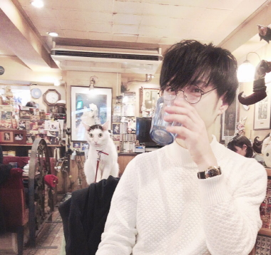

し ら ひ ゅ ー （ し ら い ひ ゆ ま ）
PROFILE
長野県中野市出身。東京都在住。
リモートワーカー。サイドジョブ。
新聞配達7年間、他アルバイト、中高サッカー部、大学受験とせわしい学生生活を過ごすも、大学進学せず、夢であった美容師を目指し美容師専門学校入学。東京都北区赤羽へ上京。
その後、学生時代に竹下通りでのスカウトをきっかけに原宿の芸能事務所へ所属。微力ながら、映画、TV、ファッション誌の出演。
美容師学校卒業後、念願の青山のサロンに就職、池尻大橋、経堂（シェアハウス）、千歳船橋（シェアハウス）、下北沢（シェアハウス）、渋谷（シェアハウス）、高円寺、代田橋、方南町と移り住む。方南町の街並みや利便性、将来性に惹かれ、2020年現在で6年目。
美容師アシスタントを経て、独立。フリーランス美容師、カフェやクルージング、クラブ、長野県に特化したイベントなどの主催・運営、DJ出演、ボランティア活動、探偵業などを経験。
日本の少子高齢化、風営法改正とデジタル化の流れをきっかけに、IT人材の需要増、供給減を憂慮し、趣味としての美容師を続けながらもIT通信業へ転職を決意。
4年間の通信機器テクニカルサポート経験の中、東京事業所にて4カ月連続の業務成績トップ表彰を獲得するなど努力を重ねる。さらなるスキルアップを求め、WEBサイト制作・デザイン・アプリ開発などを中心に英語も含めて独学中(2020年11月現在)。
3Dプリンター、アボカド栽培、筋トレ、サッカー、映画、音楽、絵、自転車など趣味多め。音痴で目が乾きやすく、プリケツのちょっと変わった人。
自転車の旅では東京⇔京都、青森、福島、鋸山、鎌倉などを往復。2011年3月の東日本大震災をきっかけに福島県の相馬市仮設住宅ではヘアカットのボランティアを2011年12月、2013年11月と行う。
2019年からプラン・スポンサーシップ参加中。2020年5月から時々UberEats配達で運動不足解消。
2020年4月からWEBサイト制作、業務管理WEBアプリ開発、サーバー構築、ネットワーク構築、パソコンやスマートフォン、IoTなどの通信機器の操作設定・トラブルシューティングのサポートなど実施中。
※お仕事のご依頼はお手数ですが、”info@developershirai.com” へ、または ”Twitter” から「お仕事依頼」と記載の上、依頼内容と共にご連絡をお願い致します。
現在、パソコンの遠隔サポートも対応しています。（要予約）
※年末年始：12月28日～1月3日まで休業です。
2020年6月、HTML/CSS/Javascriptを修了後、
英語や投資に関する学びを継続しながら、PHP、Java、MySQL、JSP/Servlet、LINUX,Git、SpringなどWEBアプリ開発関係をメインで修学中。
そして、新型コロナウイルスと闘う日々。
■11/05(MON) "09EDGE"-YELLOW LEAVES-
@WOMBLOUNGE
SPECIAL GUEST:NIBRICK(Takeru John Otoguro(block.fm)/RAYMOND(TheSAMOS) GUEST:MASAYASU from MYSS(ROC TRAX)
■11/30(FRI) "LEVEL09"
@module
SPECIAL GUEST:SUGIURUMN GUEST:AZUMI(Wyolicaワイヨリカ）,RAYMOND(TheSAMOS)
---2012.10------
■10/15(MON)U.S. - Usual Suspects - supported by SALTO
@WAREHOUSE702 [Resident of the Month DJ] SHINYA OKAMOTO (FOUREAL RECORDS) [Featuring DJ] FOOG（mule electronic）
■10/19(FRI)TROUBLE HOUSE
@WOMB OPEN TO LAST EMMA
---2012.9------
■09/03(MON) "09EDGE"-ETERNAL SUMMER-
@WOMBLOUNGE SPECIAL GUEST：Takeru John Otoguro (block.fm) GUEST：RAYMOND（TheSAMOS）、YMASA(06S/BLANC/Paramil)
■9/10
@MODULE
■9/24 DJ SODEYAMA VS 桜井誠(Dragon Ash)-supported by 09EDGE
@WAREHOUSE702
---2012.8------
■08/08(WED)Org.
@AMATE-RAXI
■08/17(FRI)TROUBLE HOUSE
@WOMB
■08/27(MON)09EDGE CAFE
@原宿Good Life Lounge
---2012.7------
■07/02(MON)”09EDGE” 2nd ANNIVERSARY
@WOMBLOUNGE
■07/09(MON)U.S.
@WAREHOUSE702
■07/31(TUE)09EDGE CRUISING
@横浜みなとみらい
---2012.6------
■06/02(SAT)SWEET CONNECTION
@メルセデスベンツコネクション六本木 OPEN23:00
■06/11(MON)U.S
@WAREHOUSE702 OPEN22:00
■06/15(FRI)TROUBLE HOUSE
@WOMB OPEN to LAST:EMMA OPEN23:00
■06/25(MON)LEVO.
@代官山AIR OPEN22:00
---2012.5------
■05/04(FRI)NAGANO GOLDEN FESTIVAL
@長野県松本市MORE HOLE
■2012/05/07(MON)
"09EDGE "OVERROCKET「MUSIC KILLS」Pre-Release Party!!
@WOMBLOUNGE 22:00-OPEN
SPECIAL GUEST:OVERROCKET GUEST: A-Bee, RAYMOND (THE SAMOS),El poco maro(Block.FM) RESIDENT: HIYUMA (09EDGE / LEVEL09)
---2012.4-------
■04/14(SAT)WOMB 12th ANNIVERSARY
@WOMB
OSAWA SHINICHI/DEXPISTLS/DJ Aki/SODEYAMA and more
■04/20(FRI) 「TROUBLE HOUSE」
@WOMB 23:00-OPEN
OPEN to LAST:EMMA
■04/23(MON)NEW PARTY「LAVO.」
@AIR 22:00-OPEN
---2012.3-------
■2012/03/05(mon) "09EDGE "SPRING TUNE SPECIAL
@WOMBLOUNGE 22:00-OPEN
SPECIAL GUEST: TACOMIMI (IMMI × JETBIKINI) GUEST: TSUGE (LIL), RAYMOND (THE SAMOS) RESIDENT: HIYUMA (09EDGE / LEVEL09)
■03/15(THU) 「SALON」
@AIR 22:00-OPEN
■03/30(FRI) 「LEVEL09」
@module 22:00-OPEN
SPECIAL GUEST：DJ SODEYAMA GUEST:JAVA((Silent Music/FUTURETECH)/TUNE(INTEGRATION/SPACE CRUSIN')/NKGW(HOUSE NATION/avex)
■03/31(SAT) SWEET CONNECTION
@メルセデスベンツコネクション六本木 24:00-OPEN
----2012.2-------------------------------------
■02/6(MON) 「LEVEL09」
@module 22:00-OPEN GUEST：KATO RYOTA/CASHY × yohei HIBIKI/CLAZY NEO/and more
■02/11(SAT) GANBAN NIGHT
@ageHa SPECIAL GUEST:EROL ALKAN GUEST:RORY PHILLIPS/TAKKYU ISHINO/!SOBE
■02/17(FRI) 「TROUBLE HOUSE」
@WOMB 23:00-OPEN OPEN to LAST:EMMA
---2011.8-------
08/6(SAT)23:00- ■ULTRAMUSIC
@ ageHa
08/13(SAT)23:00- ■C-fhamc
@ EVER
08/19(FRI)23:00- ■TROUBLEHOUSE
@ WOMB
8/27(SAT) ■@solfa
---2011.7-------
07/8(FRI)23:00- ■WET
@ ICON
07/18(MON) ■09EDGE
@WOMBLOUNGE
07/26(TUE)14:00-20:00 ■PR!ZE BEACH@逗子海岸
---2011.6-------
06/17(FRI)23:00- ■TROUBLEHOUSE
@WOMB
06/20(MON) ■SURIBAHCI
@GLAD
06/27(MON)22:00- ■DUDE！
@AIR
---2011.5-------
05/7(SAT)22:00 ■”LINE”
@Nostyle
05/09(MON)22:00- ■"09EDGE"
@WOMBLOUNGE
05/16(MON)22:00- ■SURIBACH
I@GLAD
05/23(MON)22:00- ■U.S. -Usual Suspects-support by OPUS@WEREHOUSE702
05/28(SAT)23:00- ■CLASH
＠ageHa LUKE SLATER, TAKKYU ISHINO, DJ SODEYAMA,
---2011.4-------
04/01(FRI)22:00 ■”Juggler”
@amate-raxi テクノミュージックの祭典!!
04/02(SAT)22:00- ■"RAINBOW"@ROCKWEST
04/15(FRI)22:00- ■TROUBLEHOUSE
@WOMB
04/16(SAT)23:00- ■"Puzzle Radio"
@EVER
04/17(SUN)14:00-21:00 ■@NEO
04/17(SUN)15:30- ■セレブファッションショー「Pandora's BOX」@ラボエム骨董通り
04/25(MON)22:00- ■Dude!
@AIR
---2011.3-------
03/01(TUE)19:00-24：00 ■【長野県出身】必見!!”長野パーティー”@渋谷カフェスタジオ
03/07(MON)22:00- ■”09EDGE”
＠WOMBLOUNGE GUEST：SHYBOY/JUSTIN ROSS(from NYC),ALCUIN/DARLING(from LONDON),RAYMOND(TheSAMOS)
03/11(FRI)22:00- ■80Kidz from JUN /HomeCut 出演「 WELCOME AVENNE PARTY!! 」
@EVER
03/25(FRI)21:00- ■Freestyle Lab Japan Tour 2011
@ZEPP TOKYO BOOM BOOM SATELLITES, THE LOWBROWS（LINDATUNE）, TAKKYU ISHINO, DEXPISTOLS
03/26(SAT)23:00- ■”CLASH”
＠ageHa JOEL MULL,石野卓球
---2011.2-------
02/04(FRI)22:00- ■”Juggler”
＠amate-raxi テクノミュージックの祭典!!
02/13(SAT)16:00- ■”SESSION”
＠Glad
02/18(FRI)22:00- ■【EMMA】”TROUBLEHOUSE”
＠WOMB OPEN TO LAST EMMA'S PLAY!!
02/19(SAT)23:00- ■”CLASH”
＠ageHa!! 田中フミヤ
02/25(SAT)23:00- ■”FWBA NIGHT”
＠solfa
02/28(MON)22:00- ■”Dude!”
＠AIR
---2011.01--------
01/15(SAT)23:00- ■”FAIRY TAIL”
＠EVER ファッションショー「FAIRY TAIL」の新年会！
01/17(MON)22:00- ■”09EDGE”
＠WOMB DEXPISTOLS[MAAR],★STARGUiTAR,SoL-RoM
01/21(FRI) ■”ASIENSE”
@Solfa 日本と韓国をテクノで繋げる！
01/29(SAT)23:00- ■CLASH
＠ageHa
---2010.12-----------
12/3(FRI)22:00-OPEN ■"Juggler"
@AMATE-RAXI
12/18(sat)22:00-OPEN ■"SESSION"
@WOMB
12/19(sun)16:00-22:00 ■"WAVE"
@WOMB
12/27(mon)22:00-OPEN ■"Dude! "
@AIR
12/31(FRI)22:00-OPEN ■"NEW YEAR SP"
@AMATE-RAXI
and more...
AVOCADO
なんとなく始めたアボカド成長日記。
MUSIC
好きな音楽。総やか。
PHOTO
主に自転車旅の写真。
MOVIE
映画の感想を書記す。
VIDEO
何かしらの動画
DIARY
日記かな。日記なのかな。
LINEスマート投資
ゆるーい投資レポート。
ENGLISH
”スタディサプリENGLISH”で毎日少しずつ勉強中。目指せTOIEC800点以上。
LINK
なーんとなーく作ったLINK集。
WORK
実験的なフロントエンドコード。ねこちゃんおみくじ。ねこちゃんSOS。
ぷよぷよTEST
JavaScriptの練習用ページ。
Bootstrap TEST PAGE
フレームワークおためし。